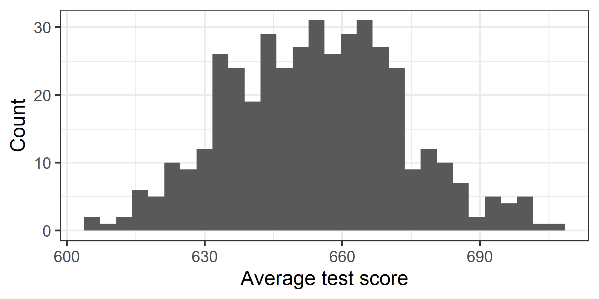
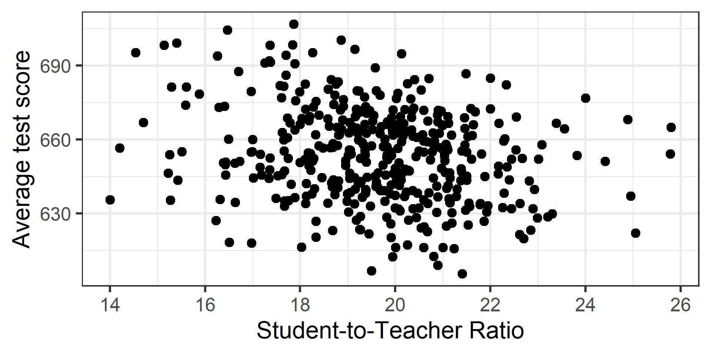
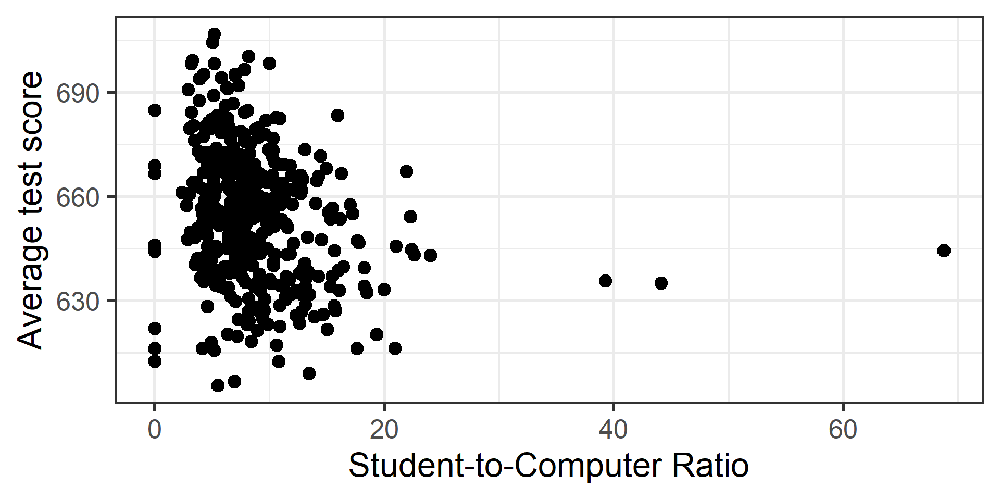
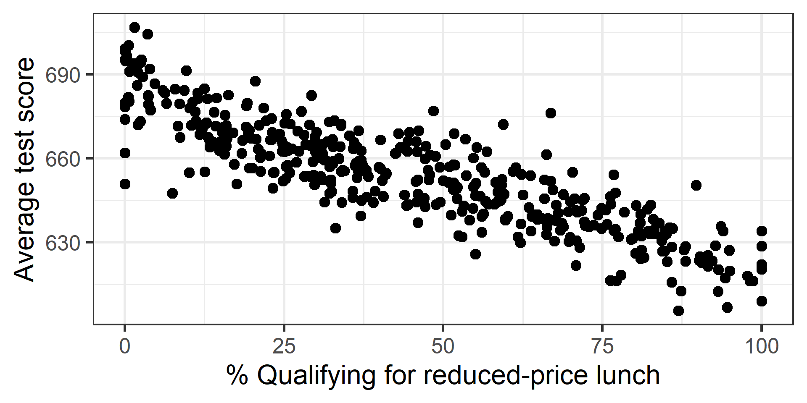
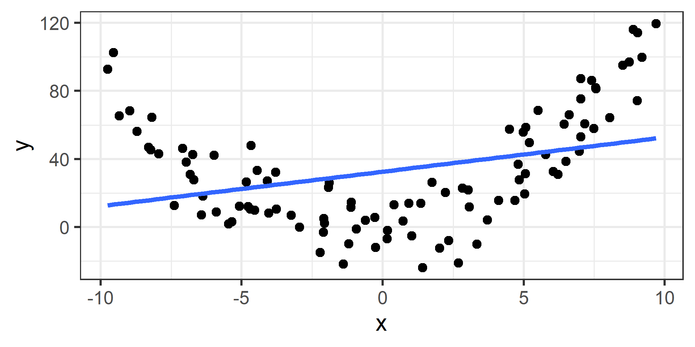
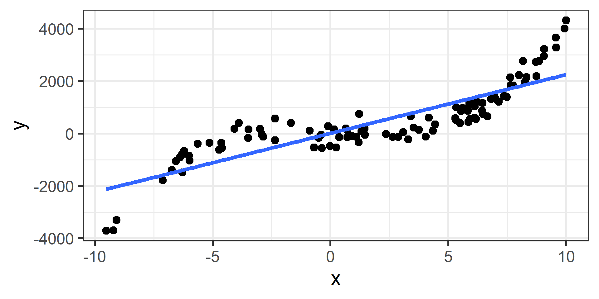

Multiple linear regression continued
The next natural questions are:
Multiple linear regression has 5 conditions:
Perfect collinearity = An \(X_j\) is a perfect linear combination of another
Cannot fit model mathematically so statistical software will drop at least one \(X\)
High collinearity = highly correlated \(X\)’s
Results in:
Remedy:
When we perform multiple linear regression, we usually are interested in answering a few important questions.
\[Y_i = \beta_0 + \beta_1 X_i + \epsilon_i\]
Hypothesis test for \(\beta_1\)!
summary() or tidy() on your model\[Y_i = \beta_0 + \beta_1 X_{1i} + \beta_2 X_{2i} + ... + \beta_p X_{p,i} + \epsilon_i\]
F-test: Hypothesis test for all \(\beta_j\)’s
summary() or glance() on your modelThe dataset contains data on test performance, school characteristics and student demographic backgrounds for school districts in California in 1999.




We are going to regress average test score on student-to-teacher ratio, student-to-computer ratio, and percent qualifying for reduced-price lunch.
\[\begin{equation*} \begin{split} &\text{Score}_i = \beta_0 \\ &+ \beta_1 \text{Student-Teacher Ratio}_i\\ &+ \beta_2 \text{Student-Computer Ratio}_i \\ &+ \beta_3 \text{\% Reduced Price Lunch}_i\\ &+ \epsilon_i \end{split} \end{equation*}\]
Call:
lm(formula = ave_score ~ student_teacher_ratio + student_computer_ratio +
lunch, data = ca_schools)
Residuals:
Min 1Q Median 3Q Max
-34.117 -5.323 -0.262 5.674 33.241
Coefficients:
Estimate Std. Error t value Pr(>|t|)
(Intercept) 703.03249 4.66790 150.610 < 2e-16 ***
student_teacher_ratio -1.04075 0.24047 -4.328 1.89e-05 ***
student_computer_ratio -0.21938 0.08388 -2.615 0.00924 **
lunch -0.59305 0.01684 -35.208 < 2e-16 ***
---
Signif. codes: 0 '***' 0.001 '**' 0.01 '*' 0.05 '.' 0.1 ' ' 1
Residual standard error: 9.158 on 416 degrees of freedom
Multiple R-squared: 0.7706, Adjusted R-squared: 0.769
F-statistic: 465.9 on 3 and 416 DF, p-value: < 2.2e-16What if you want to extract the F-statistic or its p-value?
\(H_0:\) All \(\beta_j\)’s equal 0 & \(H_A\): At least one \(\beta_j\) is non-zero
Statistical Decision: Our p-value is 1.421696e-132, which is tiny, for sure less than 0.05, so reject \(H_0\)
Conclusion in context: We found very strong evidence (p-value = 1.421696e-132) that at least one of student-teacher ratio, student-computer ratio, or % reduced lunch is linearly related to score.
From the plots it was pretty clear lunch is linearly related to score. What if we only wanted to do a test to see if student-teacher ratio and or student-computer ratio is linearly related to score?
We can do a partial F-test for nested models!
Analysis of Variance Table
Model 1: ave_score ~ lunch
Model 2: ave_score ~ student_teacher_ratio + student_computer_ratio +
lunch
Res.Df RSS Df Sum of Sq F Pr(>F)
1 418 37303
2 416 34891 2 2411.2 14.374 9.196e-07 ***
---
Signif. codes: 0 '***' 0.001 '**' 0.01 '*' 0.05 '.' 0.1 ' ' 1Statistical Decision: Our p-value is 9.19552e-07, much smaller than 0.05, so reject \(H_0\).
Conclusion in context: We found very strong evidence (p-value = 9.19552e-07) that at least one of student-teacher ratio or student-computer ratio is linearly related to score, when accounting for lunch.
# A tibble: 4 × 5
term estimate std.error statistic p.value
<chr> <dbl> <dbl> <dbl> <dbl>
1 (Intercept) 703. 4.67 151. 0
2 student_teacher_ratio -1.04 0.240 -4.33 1.89e- 5
3 student_computer_ratio -0.219 0.0839 -2.62 9.24e- 3
4 lunch -0.593 0.0168 -35.2 7.65e-127# A tibble: 2 × 5
term estimate std.error statistic p.value
<chr> <dbl> <dbl> <dbl> <dbl>
1 (Intercept) 681. 0.889 766. 0
2 lunch -0.610 0.0170 -35.9 1.19e-129Consider fitting a multiple linear regression model where all of the slopes are actually zero. In other words, none of the predictors are truly associated with the response.
If you are doing statistical inference you need to be conscious not to increase your type I error rate needlessly.
Selecting a model for prediction requires evaluating how well candidate models perform on new observations.
\[RSE = \hat{\sigma} = \sqrt{\frac{RSS}{n - 2}} = \sqrt{\frac{1}{n - 2} \sum_{i = 1}^{n} (y_i - \hat{y}_i)^2}\]
\(n - 2\) is required to for key statistical properties, but it is often replaced by just \(n\)
What would you say is a “good” RSE/RMSE value? What would be a “bad” one?
\[R^2 = (TSS - RSS) / (TSS)\]
\(R^2\) measures percent of variability in \(Y\) explained by model
What \(R^2\) be for perfectly linear data?
What would \(R^2\) be for completely unlinear data?
In practice it is context specific for what constitutes a “reasonably good” \(R^2\)
Low \(R^2\) does not mean no/(or weak) relationship, simply not a linear relationship

\(R^2\) = 0.11
High \(R^2\) does not mean a regression line fits the data well. Another function may describe it better

\(R^2\) = 0.74
\(R^2\) will always increase as \(p\) increases
People developed Adjusted \(R^2\), which penalizes for number of predictors BUT
Same as with simple linear regression!
What do we predict the average test score will be for a school with a student-teacher ratio of 22, student-computer ratio of 10, and 50% qualifying for reduced-price lunch?
fit lwr upr
1 648.2898 630.2328 666.3468We predict their average test score to be 648.29, between 630.23 and 666.35 with 95% confidence.